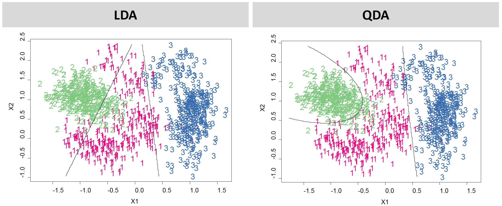

Fundamentals of
Data Analytics and
Predictions
Linear Discriminant Analysis
Xi (Rossi) LUO
Department of Biostatistics and Data Science
School of Public Health
The University of Texas Health Science Center at
Houston
Linear Methods for Prediction —1
- Let $\hat G(x)$ be the prediction. Note that we can always divide the input space into a collection of regions taking the same predicted values
- How to best divide the input space?
- The class of procedures where the decision boundaries are linear are referred to as linear methods for classification
Linear Methods for Prediction —2
- Suppose that we have $K$ classes $(1,2,…,K)$, and we fit a linear model for the $kth$ indicator response variable $\hat f_k(x)=\hat \beta _{k0} + \hat \beta _k ^Tx$
- The decision boundary between class $k$ and $l$ is the set of points for which $\hat f_k(x)= \hat f_l(x)$.
- General class of methods model the discriminant function $\delta _k(x)$ for each class, then classify $x$ to the class with the largest value for its discriminant function
Bayes Rule and Decision Theory —1
- Decision theory for classification tells us that we just need to know the class posteriors $Pr(G \mid X)$ for optimal classification
- Using Bayes theorem: $Pr(G=k \mid X=x)=\frac{Pr(X=x \mid G=k)Pr(G=k)}{\sum_{l=1}^{K}Pr(X=x \mid G=l)Pr(G=l)}$
$Pr(G=k \mid X=x)=\frac{f_k(x)\pi_k}{\sum_{l=1}^{K}f_l(x)\pi_l }$, where
$f_k(x)=$ the class conditional density of $X$ in a class $G=k$
$\pi_k$ be the prior probability of class $k$, with $\sum_{i=1}^{K}\pi_k=1$
Bayes Rule and Decision Theory —2
-
$Pr(G=k \mid X=x)=\frac{f_k(x)\pi_k}{\sum_{l=1}^{K}f_l(x)\pi_l}$
- Model each class density as a multivariate Gaussian: $f_k(x)=\frac{1}{(2\pi)^{p/2} \mid \sum_{k} \mid ^{1/2}} exp \lbrace - \frac{1}{2}(x-\mu_k)' \sum_{k}^{-1}(x-\mu_k) \rbrace$
Linear Discriminant Analysis —1
- If we assume the covariance structure is the same for all classes $\sum_{k}=\sum $, $\forall k$, we have linear discriminant analysis (LDA)
- Let's first assume that we only have one variable $(p=1)$; then the Gaussian density has the form $f_k(x)=\frac{1}{\sqrt{2\pi} \sigma_k}e^{- \frac{1}{2}(\frac{x-\mu_k}{\sigma_k})^2}$
- Where $\mu_k$ is the mean and $\sigma_k^2$ the variance in class $k$. If the covariance structure is the same for all classes, then $\sigma_k=\sigma$ for all classes.
- Plugging this into Bayes formula, we get:
$Pr(G=k | X = x)=\frac{\pi_k \frac{1}{\sqrt{2\pi} \sigma_k}e^{- \frac{1}{2}(\frac{x-\mu_k}{\sigma_k})^2}}{\sum_{l=1}^{K} \pi_l \frac{1}{\sqrt{2\pi} \sigma_k}e^{- \frac{1}{2}(\frac{x-\mu_l}{\sigma})^2}}$
Linear Discriminant Analysis —2
- To classify to one of two classes at the value $X=x$, we need to see which of the $Pr(G=k | X = x)$ is largest. It is sufficient to look at the log-ratio:
Linear Discriminant Analysis —3
- Equivalently, the discrimination function is simply (for one variable): $\delta_k(x)=\frac{x \mu_k}{\sigma^2}- \frac{\mu_k}{2\sigma^2}+\log \pi_k$
- or for more than one variable: $\delta_k(x)=x' \sum_{}^{-1} \mu_k - \frac{1}{2} \mu_k \sum_{}^{-1} \mu_k +\log \pi_k$
- With $G(x)=arg\,max_k \delta_k(x)$
Linear Discriminant Analysis —4
- Example with $\mu_1=-1.5$, $\mu_2=1.5$, $\pi_1=\pi_2=0.5$ and $\sigma^2=1$
- Typically, we don't know these parameters; we just have the training data
- In that case we simply estimate the parameters and plug them into the rule
Estimating LDA parameters
- Use the training set to estimate the parameters.
- $\hat \pi_k= \frac{N_k}{N}$, where $N_k$ is the observed number of subjects in class $k$.
- $\hat \mu_k=\sum_{g_{i=k}}^{} \frac{x_i}{N_k}$
- $\hat {\sum}= \sum_{k=1}^{K} \sum_{g_{i=k}}^{} (x_i- \hat \mu_k)(x_i-\hat \mu_k)'/(N-k)$
Linear Discriminant Analysis when $p>1$
- Density: $f(x)= \frac{1}{(2\pi)^{p/2} \mid \sum \mid ^{1/2}}e^{- \frac{1}{2}(x-\mu)^T \sum^{-1}(x-\mu)}$
Illustration $p=2$ and $K=3$
- Here $\pi_1=\pi_2=\pi_3=\frac{1}{3}$
- The dashed lines are known as the Bayes decision boundaries
- Were they known, they would yield the fewest misclassification errors, among all classifiers

Illustration $p=2$ and $K=3$
- 4 variables
- 3 species
- 50 samples/class
- LDA classifies all but 3 of the 150 training samples correctly
Fisher's Discriminant Plot
- When there are $K$ classes, linear discriminant analysis can be viewed exactly in a $K-1$ dimensional plot
- Why? Because it essentially classifies to the closest centroid, and they span a $K-1$ dimensional plane
- Even when $K>3$, we can find the 'best' 2-dimensional plane for visualizing the discriminant risk
From $\delta_x(x)$ to probabilities
- Once we have estimates $\hat \delta_x(x)$, we can turn these into estimates for class probabilities $\widehat {Pr}(G=k \mid X=x)= \frac{e^{\hat \delta_k(x)}}{\sum_{l=1}^{K}e^{\hat \delta_l(x)}}$
- Classifying to the largest $e^{\hat \delta_k(x)}$ amounts to classifying to the class for which $\widehat {Pr}(G=k \mid X=x)$ is largest
- When $K=2$, we classify to class 2 if $\widehat {Pr}(G=k \mid X=x) \ge 0.5$, else to class 1
Quadratic Discriminant Analysis
- If we assume that each class has its own correlation structure ($\sum_{k}$ are no longer equal for all $k$), then we no longer get a linear estimate
- Quadratic discriminant functions (QDA):
- The decision boundary is now described with a quadratic function.
- Note: Both LDA and QDA are finding the centroid of classes and then finding the closest centroid to the new data point. Correlation structure is taken into consideration when defining distance.
$\delta_k(x)=- \frac{1}{2}\log\mid \Sigma_k \mid -\frac{1}{2}(x-\mu_k) \sum_k\, ^{-1} (x-\mu_k)+\log \pi_k$
LDA Example
Comments on QDA and LDA
- You can get similar results to QDA using LDA with an enlarged quadratic polynomial space. QDA is preferred although LDA is a convenient alternative
- Parameter estimates are generally similar except that separate covariance matrices must be estimated for each class for QDA
- These methods generally work very well, probably because
- The data can only support simple decision boundaries such as linear or quadratic
- Estimates provided via the Gaussian models are stable
R Session
LDA versus Logistic Regression —1
- For LDA: $logit = \log(\pi_k/\pi_l) + ... + x^T \Sigma^{-1}(\mu_k - \mu_l)$
- For Logistic Regression: $logit = \beta_0 + x^T \beta$
-
Very similar! Difference comes from how the parameters are estimated - Logistic model is more general, makes less assumptions. The marginal density $Pr(X)$ is fully nonparametric, using the empirical distribution function which places mass $1/N$ at each observation
- In LDA, fit the parameters by maximizing the full log-likelihood using the Gaussian assumption for $X$
LDA versus Logistic Regression —2
- LDA imposes a distribution assumption on $X$ which, if good, will result in more efficient estimates. If the assumption is true, the estimates will be 30% more efficient. LDA not robust to gross outliers.
- Logistic regression is conditional methodology. We condition on $X$ and do not specify any distribution. Big advantage where we know that $X$ can't be normal (e.g., categorical variables).
- However, in practice they both perform similarly, even in extreme cases with categorical covariates
Why discriminant analysis?
- When the classes are well-separated, the parameter estimates for the logistic regression model are surprisingly unstable. Linear discriminant analysis does not suffer from this problem.
- If $n$ is small and the distribution of the predictors $X$ is approximately normal in each of the classes, the linear discriminant model is again more stable than the logistic regression model
- Linear discriminant analysis is popular when we have more than two response classes, because it also provides low-dimensional views of the data
Other Forms of Discriminant Analysis
- With $f_k(x)=\Pi_{j=1}^{p} f_{jk}(x_j)$ (conditional independence model) in each class we get
naïve Bayes . For Gaussian this means the $\sum_k$ are diagonal. - Many other forms, by proposing specific density models for $f_k(x)$, including nonparametric approaches.
Naïve Bayes
- Assumes features are independent in each class.
- Useful when p is large, and so multivariate methods like QDA and even LDA break down.
- Gaussian naïve Bayes assumes each $\sum_k$ is diagonal:
- Can use for mixed feature vectors (qualitative and quantitative). If $X_j$ is qualitative, replace $f_{kj}(x_j)$ with the probability mass function (histogram) over discrete categories.
- Note that Naïve Bayes has very strong assumptions! Regardless, it often produces good classification results.
$\delta_k(x) \propto \log (\pi_k \Pi_{j=1}^{p}f_{kj}(x_j))=- \frac{1}{2}\sum_{j=1}^{p}[\frac{(x_j-\mu_{kj})^2}{\sigma_{kj}^2}+\log \sigma_{kj}^2]+\log \pi_k$
Explain Possible Reasons
More from ISL 4.5
Summary
- Logistic regression is very popular for classification, especially when $G=2$
- LDA is useful when $n$ is small, or the classes are well separated, and Gaussian assumptions are reasonable. Also when $G>2$.
- Naïve Bayes is useful when $p$ is very large